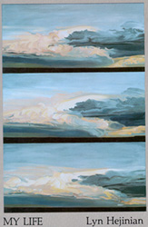
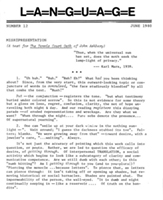
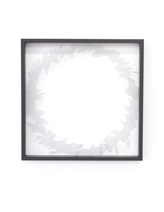

Hi
Hi
I neglected to mention how much I enjoyed the Clarice Lispector book as well. Though read it in spurts, and with absorption, then would put it down and forget everything.
A Stream of life? That makes sense, the prose actually feels launched, volubly moving along. So more than modernist distress with closing the gap of form and content.
Really curious, though I don't think I ever got a handle on it. But writing towards a present tense, and about a present-- both her present of writing, and our present in reading, reminded me of Lyn Hejinian.
They both have these philosophical modes that are also plain spoken and funny.
Although Lispector writes more about the inadequacy of writing to relate the immediacy of thought ('the instant-now'), and the metaphor is always flowing water.
Whereas Hejinian is always playing around with the way language constructs, The metonymy as a means of relating thought rather than the lyric and narrative tendencies of metaphor.
Just listened to this (kinda cute) analysis of part of My Life , on the way up to my parents' house, deep in the triangle (ha) http://www.poetryfoundation.org/features/audioitem/4540.
I like the ending, which I think works similarly to how you describe the American Language Poetry.
The confluence of longing . we'll call it, and something formally determined is something I think about often, and aspire to.”
. we'll call it, and something formally determined is something I think about often, and aspire to.”
There's this anecdote about Donald Barthelme telling his class ‘We have a wacky mode. What must a wacky mode do? ...Break their hearts.”
Or from Lispector: "You gave me a ring of glass and then it broke and love ended.".